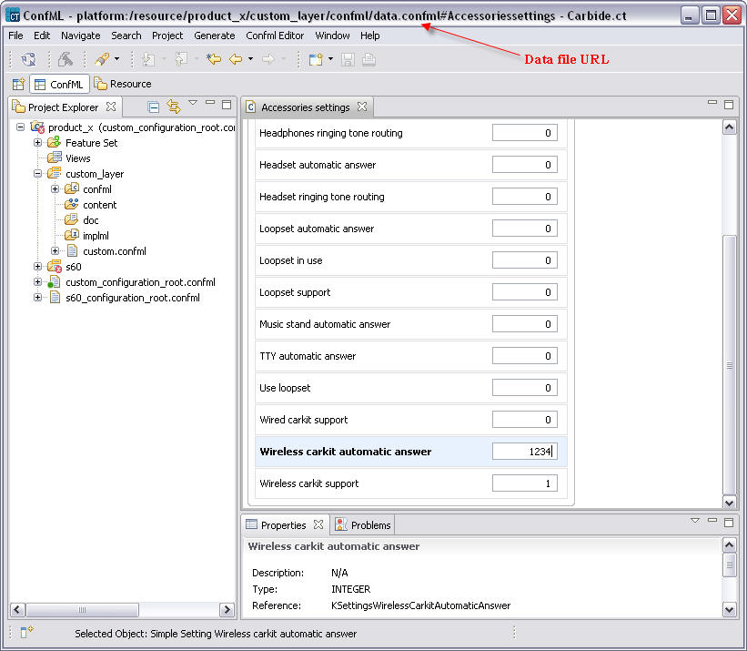
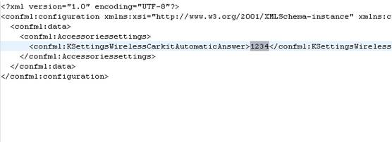

Overriding data with Value Editor
Using value editor user can override the default values of settings in the configuration. To accomplish this follow the following steps:
- On the Project Explorer under Feature Set right-click the feature you want to edit and select Open Feature Editor.
- Modify the values in the editor as needed. See the following graphic for an overview.
Figure 9 modifying default values with value editor. All user modified settings will appear bolded.
- Save your changes at the end. The changes will be saved in active Configuration root file’s last layer. In this case custom_layer/confml/data.confml

Figure 10 Data overrides